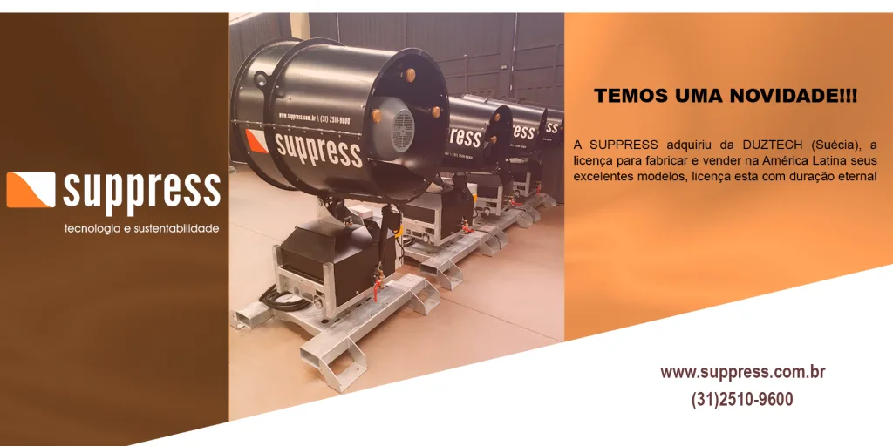

Não É Para Menos Que a Suppress Tem "Tecnologia" no Nome
De importadora de equipamentos suecos a fabricante nacional: a trajetória que consolidou a engenharia própria da Suppress.

Fundada há mais de dez anos, a Suppress iniciou suas atividades importando equipamentos de alta qualidade da Suécia, fornecidos pela fabricante Duztech. Foram anos construindo experiência prática junto a clientes de mineração, siderurgia e construção civil, e colecionando aprendizados sobre o que realmente funciona no controle de poeira em campo. Essa fase foi mais do que um período de distribuição: foi uma escola técnica que permitiu à empresa compreender as limitações e as exigências reais dos ambientes industriais brasileiros antes de se tornar fabricante.
O que a Suécia ensinou à Suppress
A Duztech, fabricante sueca parceira da Suppress, tem décadas de experiência no desenvolvimento de canhões de névoa para aplicações industriais. Seus equipamentos foram testados em condições climáticas e operacionais extremamente variadas, das minas do norte europeu às operações portuárias do Mediterrâneo, e chegaram ao Brasil com um histórico de confiabilidade técnica comprovado.
Para a equipe da Suppress, importar esses equipamentos não foi apenas uma atividade comercial. Foi um processo intenso de aprendizagem técnica: entender como a engenharia dos bicos atomizadores afeta a granulometria da névoa, como a seleção do sistema de ventilação determina o alcance do jato em diferentes condições de vento, e como a configuração elétrica dos painéis precisa ser adaptada às normas brasileiras, especialmente a NR-10 e a NR-12. Esse conhecimento foi o alicerce que permitiu à empresa dar o passo seguinte.
Duas conclusões que mudaram o rumo da empresa
Depois de vários anos no mercado, a Suppress chegou a duas grandes conclusões. A primeira: "os equipamentos que importamos da Duztech são muito bem projetados e extremamente confiáveis", uma engenharia sólida, testada e validada em diferentes condições operacionais.
A segunda conclusão foi igualmente importante: cada cliente tem necessidades específicas de combinação entre ventilação, tipo de bico e capacidade de bombeamento. Não existe equipamento "padrão" ideal para todas as aplicações, existe o equipamento certo para cada operação, como detalhamos em nosso artigo sobre soluções personalizadas para abatimento de poeira. Essa percepção foi decisiva para a estratégia de fabricação própria: ao controlar o processo de produção, a Suppress ganhou a agilidade necessária para customizar os equipamentos conforme a demanda de cada cliente.
De importadora a fabricante
Em 2020, a Suppress deixou de ser apenas importadora de equipamentos e passou a ser fabricante. A empresa desenvolveu sua própria linha de canhões de névoa para lançamento de média distância, com os modelos SP-15, SP-35 e SP-45. Após uma fase de testes rigorosos em condições operacionais reais, esses equipamentos entraram em produção regular e tiveram forte aceitação no mercado nacional.
O desenvolvimento da linha própria de média distância não foi um processo rápido. Envolveu ciclos iterativos de projeto, protótipo e validação em campo, com equipes técnicas que testaram os equipamentos em diferentes tipos de operação, desde canteiros de obras urbanos até frentes de lavra em operações de mineração. Esse rigor no processo de desenvolvimento é o que garante que os equipamentos entregam, em condições reais, a eficiência prometida nas especificações técnicas.
Licença de fabricação para a América Latina
Um marco importante veio na sequência: a Suppress adquiriu uma licença perpétua de fabricação e comercialização da Duztech para toda a América Latina. Isso permitiu produzir, em solo brasileiro, modelos já consagrados no mercado internacional, SP-55 (antigo A50), SP-65 (antigo A60) e os grandes canhões SP-150 (antigo A150), mantendo o mesmo padrão de qualidade tecnológica sueco, agora com produção nacional. Mais recentemente, essa linha de grande porte ganhou também uma versão de grande vazão, o SP-150e, voltada a aplicações de evaporação e gestão de barragens.
A licença perpétua representa um diferencial competitivo significativo no mercado brasileiro: a Suppress pode fabricar e ajustar esses modelos localmente, sem depender de prazos de importação ou de câmbio desfavorável. Em um mercado onde a urgência por soluções de controle de poeira frequentemente é alta, seja por pressão regulatória, por exigência de licença ambiental ou por riscos à saúde dos trabalhadores —, a agilidade de entrega de um fabricante nacional é um fator decisivo.
Crescimento sustentado por engenharia própria
A transição de importadora para fabricante não eliminou o vínculo da Suppress com a engenharia que a originou, ao contrário, consolidou um modelo híbrido em que a base técnica sueca se combina à capacidade de adaptação rápida de um fabricante nacional. Isso se traduz, na prática, em equipamentos com componentes de fornecedores internacionalmente reconhecidos, fabricados e ajustados em solo brasileiro conforme a realidade de cada operação, seja em mineração, siderurgia ou construção civil.
A Suppress já forneceu mais de 100 equipamentos em todas as regiões do país, para clientes que incluem grandes mineradoras, siderúrgicas, empresas de construção civil e terminais portuários. Cada entrega representa não apenas um equipamento instalado, mas um projeto de engenharia personalizado, levantamento técnico da operação, dimensionamento do equipamento, instalação assistida e suporte pós-venda.
De importadora a fabricante com licença internacional: a Suppress consolidou uma trajetória de engenharia própria sem abrir mão do padrão de qualidade que a fez crescer.
A sustentabilidade como pilar estratégico
O nome completo da empresa, Suppress Tecnologia e Sustentabilidade: reflete um compromisso que vai além da tecnologia. Cada equipamento da linha Suppress é projetado para minimizar o consumo de água em comparação a métodos tradicionais de controle de poeira, contribuindo para operações mais sustentáveis. Essa eficiência hídrica é especialmente relevante em um contexto de crescente pressão regulatória e social sobre o uso racional de recursos naturais. Saiba mais sobre como essa abordagem se conecta ao conceito mais amplo de sustentabilidade industrial e abatimento de particulado.
Tecnologia como compromisso, não apenas como nome
O nome "Suppress Tecnologia e Sustentabilidade" não é por acaso. Cada etapa dessa trajetória, da importação à fabricação própria, da licença internacional ao desenvolvimento de modelos cada vez mais robustos, reflete um compromisso contínuo com engenharia de qualidade aplicada ao controle de particulados industriais. Para conhecer a linha completa de equipamentos resultante dessa trajetória, visite a página de produtos Suppress ou conheça mais sobre a empresa em nossa página institucional.
Perguntas Frequentes
A Suppress ainda importa equipamentos da Suécia?
Não mais como atividade principal. Desde 2020, a Suppress fabrica seus equipamentos em solo brasileiro, incluindo modelos sob licença perpétua de fabricação da Duztech para toda a América Latina, mantendo o padrão de engenharia que originou a empresa.
Quais modelos a Suppress desenvolveu com engenharia própria?
A linha de média distância, com os modelos SP-15, SP-35 e SP-45, foi a primeira desenvolvida internamente pela Suppress, antes da aquisição da licença de fabricação dos modelos de maior porte junto à Duztech.
O que significa a licença de fabricação adquirida da Duztech?
É uma licença perpétua que permite à Suppress fabricar e comercializar, em todo o território da América Latina, modelos de canhão de névoa já consolidados internacionalmente, como o SP-55, o SP-65 e o SP-150, mantendo o mesmo padrão de engenharia sueco com produção nacional.
Conheça a linha completa de canhões de névoa Suppress
Da engenharia sueca à fabricação nacional: fale com nossos especialistas.
Solicitar Proposta